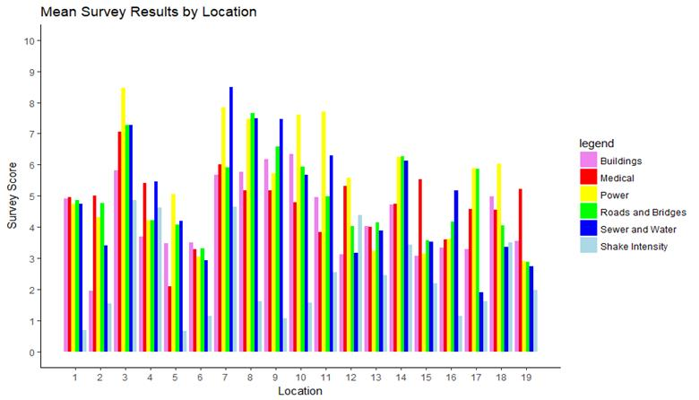
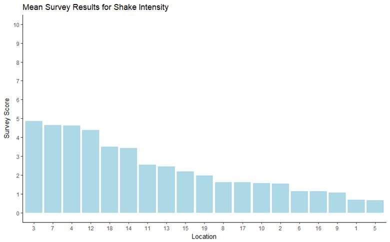
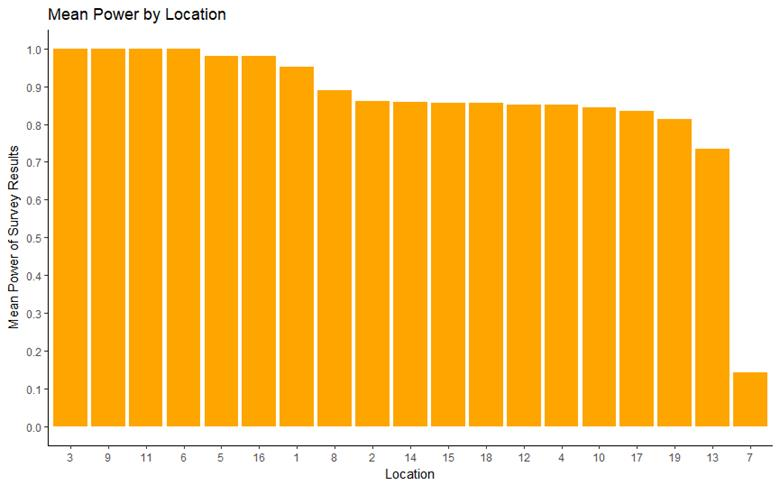
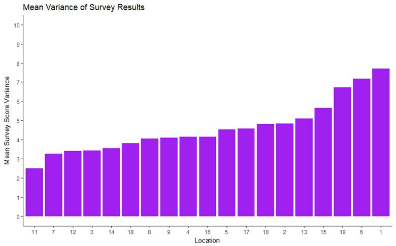
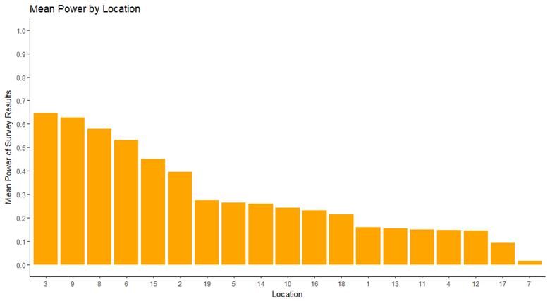
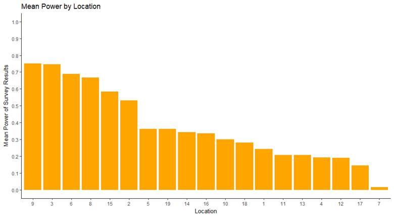
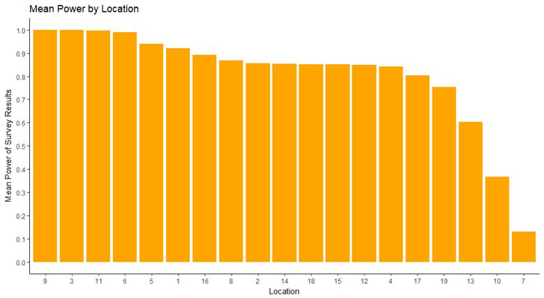

Entry Name: "TTU-Ketring-MC1"
VAST Challenge 2019
Mini-Challenge 1
Team Members:
Jordan Ketring, Texas
Tech University, Jordan.Ketring@ttu.edu
Tools Used:
R, Microsoft Excel, javascript d3
Questions
1 Emergency responders will
base their initial response on the earthquake shake map. Use visual analytics
to determine how their response should change based on damage reports from
citizens on the ground. How would you prioritize neighborhoods for response?
Which parts of the city are hardest hit? Limit your response to 1000 words and
10 images.
The
focus of the emergency responders, if following the earthquake shake map, started
on locations 3, 4, and 12. Following
that, they would have focused on locations 7, 13, and 14 and other neighboring
locations. Following are the mean values
of the citizen damage reports divided up by location.

The
data provided by citizen damage reports included six different evaluations of
damage. Deciding where to focus
emergency responders depends on the relative priority of these different types
of damage. Therefore, we will evaluate
each type of damage individually.
Sewer
and water damage affected locations 7, 8, 9, and 3 to a greater degree than
other locations, according to damage reports.
A paired t-test proves this for locations 8, 9, and 3 with p-values all
<0.001. However, location 7, due to a
smaller sample size of data, is not certain to be of greater damage than
locations 11, 14, or 10.
Damage
to the power infrastructure falls most heavily on locations 3, 7, 11, 10, and
8. This group of locations has higher
mean damage according to a paired t-test with all p-values <0.001.
Damage
to roads and bridges falls most severely on locations 8 and 3. A paired t-test shows they have a higher mean
damage than all other areas with all p-values <0.001.
The
location that suffered the most damage to medical facilities was location
3. Due to a lack of response in many
locations to this survey question, presumably because of a lack of hospitals in
some areas, paired t-tests were not possible.
However, location 3 is the only front runner in damage that contains a
hospital at all.
The
locations with the highest reported building damage are 10, 9, 3, 8, and
7. Again location 7 has one of the
highest reported mean damage scores, but due to a smaller sample size, a paired
t-test is unable to separate it from the rest of the locations. Locations 10, 9, 3, and 8 however, all have
greater damage reports than the remaining locations with p-values <0.001.

Shake
intensity is not a direct measure of damage or suffering, and therefore is not
likely a good metric to base the focus of relief efforts on. However, it validates the user reported data,
as all locations mean reported shake intensity agrees strongly with the shake
map.
To
evaluate which locations deserve the most focus we may
examine which locations consistently reported the most damage in each category.
|
Damage Type |
3 |
7 |
8 |
9 |
10 |
11 |
|
Sewer and Water |
* |
* |
* |
* |
||
|
Power |
* |
* |
* |
* |
* |
|
|
Roads and Bridges |
* |
* |
* |
* |
* |
|
|
Medical |
* |
|||||
|
Buildings |
* |
* |
* |
* |
* |
|
|
Sum |
5 |
4 |
4 |
2 |
3 |
2 |
Of
these, location 3 is the only one to appear at the top of every damage
report. Regardless of which type of
damage is prioritized, location 3 should be among the first locations where aid
is focused. As this location was already
covered by the shake maps, it was likely already a focus of attention. Locations 4 and 12 however, do not need as
much focus according to damage reports, and attention can be diverted from them
to locations 7 and 8. Attention given to
locations 9, 10, and 11 would depend upon the importance of repairing sewer and
water damage compared to that of restoring power and repairing roads and
bridges, thus a value judgement is required that is beyond the scope of this
analysis.
2 Use visual analytics to
show uncertainty in the data. Compare the reliability of neighborhood reports.
Which neighborhoods are providing reliable reports? Provide a rationale for
your response. Limit your response to 1000 words and 10 images.
The
reliability of the survey data can be evaluated in two different ways. Each location provided varying amounts of
sample data. The number of responses can
be used to calculate the statistical power of each locations data set. In other words, statistical power tells us
the likelihood we can detect differences between each group of a certain
size. The other method is a comparison
of the variances within each locations responses. This is our best indication of the
consistency with which observers in the same area provided the same ratings for
each type of damage.

The
power of each locations data set to detect a difference of 0.1 in score with a
p-value < 0.05 is depicted above. The
data set of every location has enough statistical power to calculate even small
effect sizes, except for location 7.
This is consistent with the findings that multiple p-values in paired
t-tests between location 7 and other locations were above the threshold for
significance.

The mean variance of each variable, divided
by location is depicted above. The
locations with the lowest variance have the greatest consistency, and therefore
the best reliability.
Locations
11, 12, 3, and 14 provided the most reliable data as evidenced by their low
variances. Location 7 is an exception,
because although it has a low variance, its data does not have the statistical
power to be considered as trustworthy as the other locations data.
3 How do conditions change
over time? How does uncertainty in change over time? Describe the key changes
you see. Limit your response to 500 words and 8 images.
After
one day from the first data submission, areas show much lower ratings of damage
then later data reports. For sewers and
water as well as building damage, an analysis of variance test does not
indicate significant differences between any locations.

No
locations have enough power to detect differences of 0.1 with significance,
using a typical minimum power of 0.8.
None
of the types of damage have particular locations with
higher mean reports than all others with significance indicated by a p-value
< 0.05. This means that after a
single day of gathering data, no certain statements could be made as to the
appropriate priorities to focus on, and a shake map would serve just as well as
a guide to emergency responders.
After
two days from the first data submission, the analysis of variance test yielded
the same results as with a single day of data.
No significant differences were found in the sewer and water and
building damage types. No location had
proved to be more damaged than most others through a paired t-test for power
and medical damage, but location 13 showed significantly more damage than every
other location in damage to roads and bridges.

Only
locations 9 and 3 show enough power to detect differences of 0.1 at a p-value
of <0.05.
After
three days of gathering data, every category shows that there are significant
differences between groups from an analysis of variance.

The
power to detect differences of 0.1 with a p-value <0.05 is acceptable for
most of the locations, except 13, 10, and 7.
The
sewer and water damage shows similar results to the
final data set, this time with significant p-values <0.05 from a paired
t-test for locations 7, 9, 8, 11, 14, and 3.
Likewise power
damage shows significantly higher results in locations 11, 7, 3, 9, and 8. This closely mirrors the final findings.
The
mean damage reported for roads and bridges has results that are significantly
higher than all other locations for 9, 8, 14, and 7. This somewhat resembles the final analysis
that included 8 and 3 as the top locations.
The
medical data again is too sparse for a successful paired t-test, but location
3, clearly shows the most damage, just like the analysis with all data present.
Locations
9, 7, and 8 show mostly significantly larger means when compared to other
locations via t-test. This fits closely
to final results.
Until
3 of the 4 days of observation have passed, the data is too uncertain to
provide meaningful insight on which locations deserve the highest
priority. After 3 days, the results
showed very similar findings to the analysis of the final data set, with a
recommendation to prioritize locations 3, 7, 8, and 9.
4 The data for this challenge can be analyzed either as a static
collection or as a dynamic stream of data, as it would occur in a real
emergency. Describe how you analyzed the data - as a static collection or a
stream. How do you think this choice affected your analysis? Limit your
response to 200 words and 3 images.
The data was analyzed as a static collection. Had it been analyzed as a dynamic stream, no conclusive recommendations would have been possible until 3 days worth of data had come in. The choice of which locations to focus emergency aid on did not significantly differ over time once there was enough data for significant results.